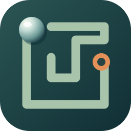

重力滚球
GRAVITY MAZE
一点倾斜，一场探索。
体感设置
THE BALANCE SERIES
立体迷宫球
画质
自动
超清
均衡
近看模型
全屏查看 ⛶
暂停
P
本局用时
00:00.0
星星收集
0 / 3
掉落次数
0
✦
↙
退出全屏
Esc
倾斜 · 滚动 · 抵达
3D PLAYFIELD
↑
←
↓
→
连接体感并设置中位，或直接使用键盘试玩。
起点
星星
终点
陷阱
视角随球环绕 · 星星存档
TAKE YOUR TIME
挑战已暂停
继续挑战
重新挑战
返回选关